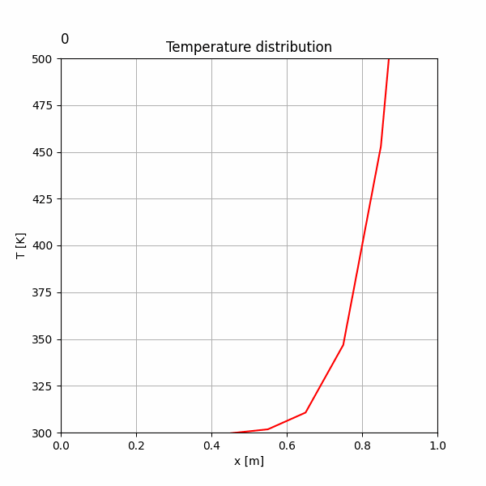
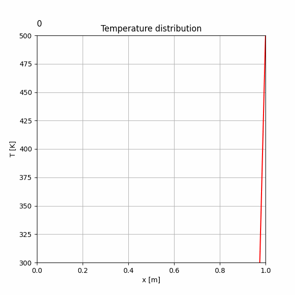
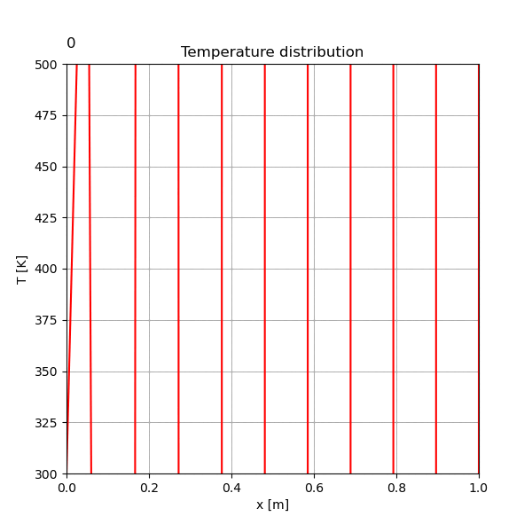
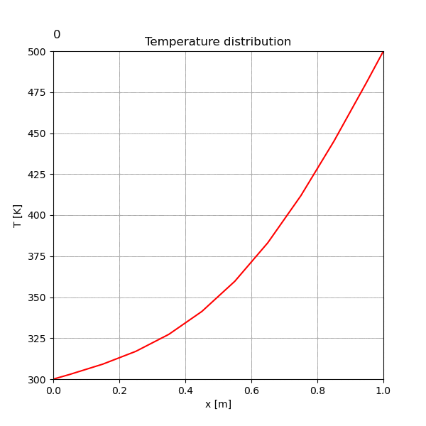

This lesson covers programs that solve the 1D unsteady heat conduction equation using both explicit and implicit methods.
1dExpAns.py)The temperature at the current time step is calculated directly from the known temperatures of the previous time step.

# ... (Parameter & Grid Setup) ...
# Time step loop
for n in range(1,NO):
# Loop through all grid points
for i in range(1,N+1):
# T[i] is calculated using temperatures from the previous step, To[i-1], To[i], To[i+1].
# This is a direct calculation without solving simultaneous equations.
T[i] = (ce[i]*To[i+1] + cw[i]*To[i-1] + (co[i]-ce[i]-cw[i])*To[i]) / co[i]
# Update the temperature of the previous step for the next calculation
To[:]=T[:]
# ... (Store data for animation) ...
# ... (Visualization) ...
1dImpAns.py)This method formulates a system of linear equations for the unknown temperatures at the current time step and solves it iteratively.

# ... (Parameter & Grid Setup, including 'cd' coefficient) ...
# Time step loop
for n in range(1,NO):
# Inner loop for iterative convergence at the current time step
l = 0
flg=1
while flg ==1:
flg=0
l=l+1
for i in range(1,N+1):
# T[i] is calculated using the temperatures of the previous step (To)
# and the predicted temperatures of the current step (Tp).
T[i] = (ce[i]*Tp[i+1] + cw[i]*Tp[i-1] + co[i]*To[i])/cd[i]
# ... (Convergence check between T and Tp) ...
Tp[:]=T[:] # Update prediction
# Update the temperature of the previous step for the next time step
To[:]=T[:]
# ... (Store data for animation) ...
# ... (Visualization) ...
demo/diffusionNumber: Stability ComparisonThis demo investigates the effect of the diffusion number on stability. The explicit method becomes unstable when the diffusion number is large (>0.5), while the implicit method remains stable.


このレッスンでは、1次元の非定常熱伝導方程式を、陽解法と陰解法で解くプログラムを扱います。
1dExpAns.py)現在のタイムステップの温度を、計算済みの前ステップの温度分布のみから直接計算します。
# ... (パラメータと格子の設定は省略) ...
# 時間発展ループ
for n in range(1,NO):
# 全ての格子点をループ
for i in range(1,N+1):
# 前のステップの温度 To[i-1], To[i], To[i+1] を使って現在のステップの T[i] を計算
# 連立方程式を解く必要がない直接的な計算
T[i] = (ce[i]*To[i+1] + cw[i]*To[i-1] + (co[i]-ce[i]-cw[i])*To[i]) / co[i]
# 次の計算のため、前ステップの温度を更新
To[:]=T[:]
# ... (アニメーション用データ保存) ...
# ... (可視化) ...
1dImpAns.py)現在のタイムステップの未知の温度について連立方程式を立て、それを反復計算で解きます。
# ... (パラメータと格子の設定、係数'cd'を含む) ...
# 時間発展ループ
for n in range(1,NO):
# 現ステップ内での収束計算のための内部ループ
l = 0
flg=1
while flg ==1:
flg=0
l=l+1
for i in range(1,N+1):
# 前ステップの温度(To)と、現ステップの推測値(Tp)を使って T[i] を計算
T[i] = (ce[i]*Tp[i+1] + cw[i]*Tp[i-1] + co[i]*To[i])/cd[i]
# ... (T と Tp の収束判定) ...
Tp[:]=T[:] # 推測値を更新
# 次の時間ステップのため、前ステップの温度を更新
To[:]=T[:]
# ... (アニメーション用データ保存) ...
# ... (可視化) ...
demo/diffusionNumber: 安定性の比較拡散数が計算の安定性に与える影響を調査します。陽解法では拡散数が大きい(>0.5)と計算が発散しますが、陰解法は安定して計算ができます。